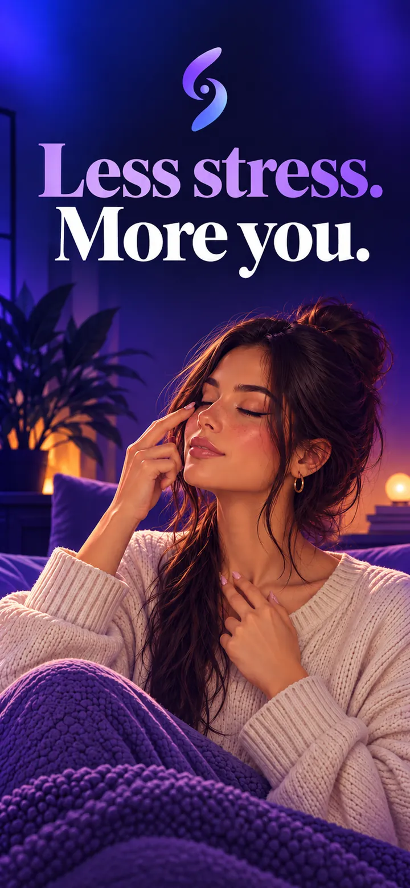
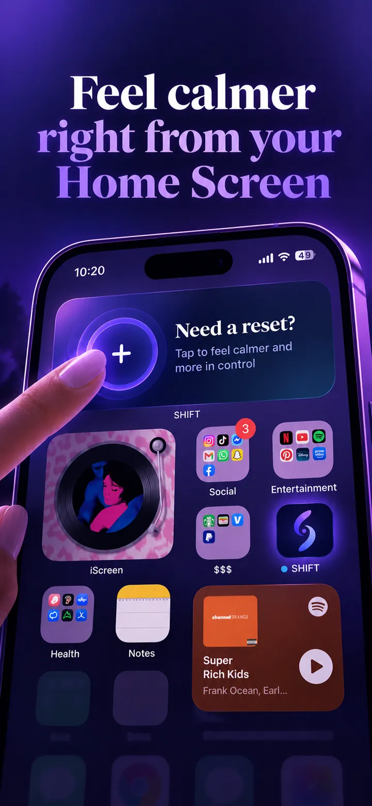
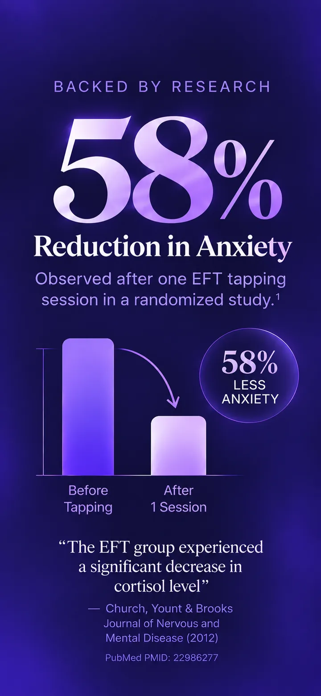
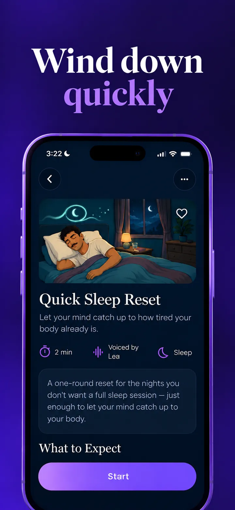
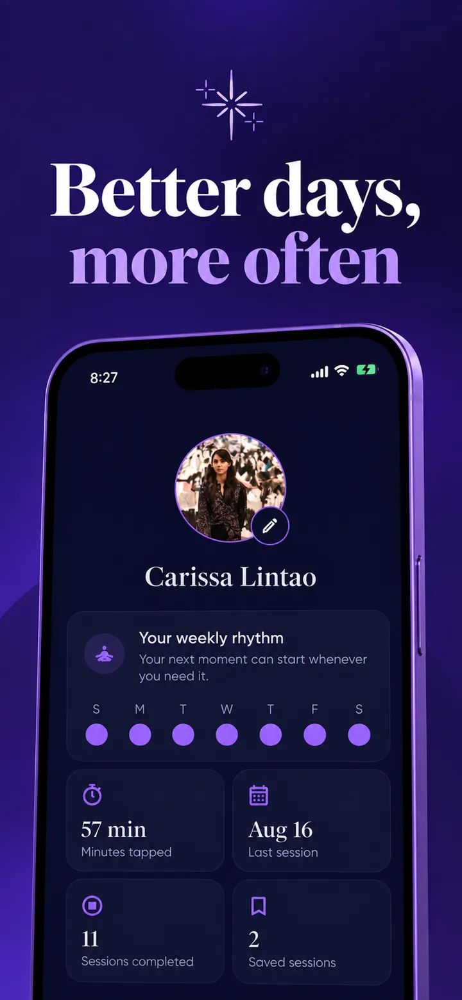

Say what's going on
Pick what you're feeling, and you'll get a session written for that moment. No diagnosis and no quiz.
Guided EFT tapping for the moments that throw your day off. Try a session right here, with no download and no sign-up.
This is the real thing. Pick a feeling and tap along.
How it works
EFT tapping means gently tapping on points on your face and body while you name what you're feeling. A voice walks you through all of it.
Pick what you're feeling, and you'll get a session written for that moment. No diagnosis and no quiz.

The glow shows you where to tap. Use two fingers and tap lightly, moving through nine points.

Say each phrase out loud or quietly in your head. There's no perfect way to do it.
Made for real moments


The SHIFT app
The app adds a Home Screen widget, favorites, background music and a weekly rhythm that fills in as you practice.





FAQ
Yes. The player at the top of this page runs in your browser. You don't need an account, and it's free. Turn your sound on first.
Tapping is a self-guided wellness practice inspired by Emotional Freedom Techniques (EFT). SHIFT combines gentle tapping prompts with spoken reflection.
No. Every session shows you exactly where to tap. In the app, Learn the Tapping Points has a short video demo for each of the nine points if you want more guidance.
Full sessions are built around three short rounds: Acknowledge, Soften and Reinforce. Quick sessions are one round. Each has synced visual tapping cues.
No. SHIFT is intended for general wellness and self-care and is not medical advice, diagnosis, therapy, or a substitute for professional care.
SHIFT is an EFT-inspired, adapted wellness tool for everyday moments, common stressors, and less intense feelings. It does not replace an EFT practitioner, licensed therapist, or other qualified professional. Trauma, anxiety disorders, phobias, and intense or persistent emotional experiences deserve individualized professional support and cannot be addressed by this app.
No. The voices in SHIFT are AI-generated, and the sessions are written for specific everyday moments.
Not yet. The app is on iPhone, and the player on this page works on any phone or computer.
Start in your browser, or get the app on iPhone.